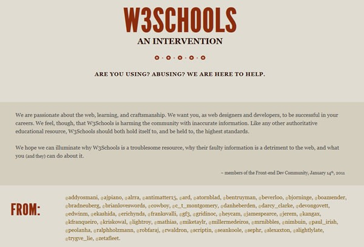

JavaScript Best Practices
in 2014
Ralph Holzmann · @rlph · WordCamp Milwaukee 2014
Slides at bit.ly/ralph-wordcamp-mke
Ralph Holzmann

- Software Engineer at Vine, Web Team
- Remotely from Fond du Lac, WI
2014?
Pro JavaScript Techniques
W3Fools

2014.
1. Runtime assertions
assert
function assert (message, test) {
if (!test) throw new Error(message);
}
- Inline unit testing
- More meaningful error messages
Example
function MyWidget (options) {
assert("MyWidget requires an options object", typeof options === "object");
/* ... */
}
MyWidget.prototype.swap = function (first, second) {
assert("MyWidget#swap requires two arguments", arguments.length === 2);
/* ... */
}
MyWidget.prototype.makeDecision = function (value) {
switch (value) {
case "foo":
this.doOneThing();
break;
case "bar":
this.doAnotherThing();
break;
default:
assert("Invalid argument for MyWidgit#makeDecision")
}
}
2. Promises
Promises
- An object that represents a single value that exists or will exist in the future.
- Provides constructs to mimic
try-catch-finallyover a set of async operations. - Popularized by Dojo and jQuery Deferreds
- Refined, spec'd and slated for ES6
Promises (continued)
- Perfect for things like
- AJAX requests on the client
- Database fetches on the server (Node.js)
- A promise can be
unfulfilled,accepted, orrejected. - Access a promise's value and handle it's error using
.then
Promise Example
var promise = new Promise(function(resolve, reject) {
// do a thing, possibly async, then…
if (/* everything turned out fine */) {
resolve("Stuff worked!");
} else {
reject(new Error("It broke"));
}
});
promise.then(function(result) {
console.log(result); // "Stuff worked!"
}, function(err) {
console.log(err); // Error: "It broke"
});
Returning a Promise in a callback
- Returning another Promise in a Promise callback allows you to chain async operations, instead of nest them.
- It also allows you to handle errors anywhere in the chain of async operations.
No callback hell
asyncThing1().then(function() {
return asyncThing2();
}).then(function() {
return asyncThing3();
}).catch(function(err) {
return asyncRecovery1();
}).then(function() {
return asyncThing4();
}, function(err) {
return asyncRecovery2();
}).catch(function(err) {
console.log("Don't worry about it");
}).then(function() {
console.log("All done!");
});
More about Promises
- HTML5 Dev Conf Video Redemption from Callback Hell
- by Michael Jackson and Domenic Denicola
- HTML5 Rocks JavaScript Promises
There and back again
- by Jake Archibald
3. Content Security Policy
What is Content Security Policy?
- "[...] A policy language used to declare a set of content restrictions for a web resource [...]"
- A set of rules the browser follows to prevent XSS attacks
- Currently supported in Firefox and Chrome using
X-Content-Security-PolicyandX-WebKit-CSPheaders, respectively.
Unsafe ways to inject content
- JS
element.innerHTML = content - jQuery
$("body").html(content) - Mustache / Handlebars
{{{content}}} - React
dangerouslySetInnerHTML={{__html: content}} - HTML
<p><script>alert("lol")</script></p>
Available directives
- script-src, object-src, style-src, img-src, media-src, frame-src, font-src, connect-src
- default-src
script-src values
unsafe-inline- Prevents inline scripts from executing
- Any script tags without a
srcwill be ignored <script>alert("lol")</script>won't fire
unsafe-eval- No
eval,new Function(),setTimeout, orsetInterval
- No
report-uri
- Get a JSON post anytime a user violates a CSP directive
-
Content-Security-Policy: report-uri http://example.org/csp.php
report-uri JSON
{
"csp-report": {
"document-uri": "http://example.org/page.html",
"referrer": "http://evil.example.com/haxor.html",
"blocked-uri": "http://evil.example.com/image.png",
"violated-directive": "default-src 'self'",
"original-policy": "default-src 'self'; report-uri http://example.org/csp.php"
}
}
Content-Security-Policy-Report-Onlyif you want to be cautious with existing apps.
CSP examples
-
Content-Security-Policy: default-src 'self'- A server wishes to load resources only form its own origin
-
Content-Security-Policy: default-src https: 'unsafe-inline' 'unsafe-eval'- Online banking site wishes to ensure that all of the content in its pages is loaded over SSL
4. Modules
What is a "module" in JavaScript
- Portable namespace for your code
- Hard parts:
- "Portable"
- Dependencies?
In the dark ages…
window.jQuery = window.$ = jQuery; // Done. Ship it.
- Okay, that works for jQuery, in a browser.
- There is no
windowin Node.js, for example. - What about something like Backbone.js which depends on Underscore.js?
CommonJS
/* Backbone.js */
var _ = require("underscore");
/* Backbone implementation goes here */
module.exports = Backbone;
- CommonJS implementation will pick up the underscore dependency and ensure its available.
- Requires a build step or CommonJS server.
Asynchronous Module Definition (AMD)
/* Backbone.js */
define(["underscore"], function(_) {
/* Backbone implementation goes here */
return Backbone;
});
- Works async in the browser without a build step.
- Everything has to be wrapped in
define(fn).
Universal Module Definition (UMD)
/* Backbone.js */
(function (root, factory) {
if (typeof define === 'function' && define.amd) {
define(['underscore'], factory);
} else if (typeof module === "object" && typeof require === "function") {
var _ = require("underscore");
module.exports = factory(_);
} else {
root.Backbone = factory(root._);
}
}(this, function (_) {
/* Backbone implementation goes here */
return Backbone;
}));
ES6 Module Definition
/* Backbone.js */ import _ from 'underscore'; /* Backbone implementation goes here */ export default Backbone;
- ES6 Module Transpiler
- Author in ES6, export to whatever format you like.
- Future proof.
5. hasOwnProperty
A cautionary tale
Twitter was broken in Android Firefox
- Media would not display
- February 2014
- Media worked in version 27, but not 28
- Bugzilla Bug 924386
- What happened?
Offending code
onRequestSuccesshandler processing response to/api/media_timeline
e.entries ? (j = "entries", i = e.entries) : e.modules ? (j =
"modules", i = e.modules) : a.isArray(e) ? (i = e, e = {
tweets: i
}) : i = e.tweets;Offending code unminified
/* Blown up... */
var entries;
if (response.entries) {
entries = response.entries;
} else if (response.modules){
entries = response.modules;
} else if (isArray(response)) {
entries = response;
} else {
entries = response.tweets;
}
Sample responses
{"entries":[{},{}]}
{"modules":[{},{}]}
[{},{}]
{"tweets":[{},{}]}
What happened between
Firefox 27 and 28?
ES6 Array.prototype.entries
- A new
Arraymethod calledentrieswas added to Firefox 28
/* In Firefox 27... */ !! [].entries; // false /* but in Firefox 28 /o\ */ !! [].entries; // true
Offending code again
/* Blown up... */
var entries;
if (response.entries) {
entries = response.entries;
} else if (response.modules){
entries = response.modules;
} else if (isArray(response)) {
entries = response;
} else {
entries = response.tweets;
}
Offending code fixed
/* Blown up... */
var entries;
if (response.hasOwnProperty("entries")) {
entries = response.entries;
} else if (response.modules){
entries = response.modules;
} else if (isArray(response)) {
entries = response;
} else {
entries = response.tweets;
}
Fin.
Reach Out!
- Emails at ralph@vineapp.com
- Vine vine.co/ralph
- Twitter @rlph
- ralphholzmann on freenode
/join#jquery,#html5,#webplatform,##javascript,#node.js